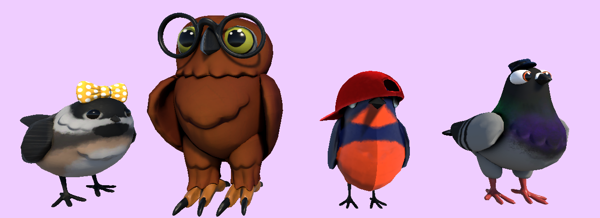

Lovebirds
Créé dans le cadre de la mini-jam 184 : birds (4ème dans la catégorie "enjoyment"), Lovebirds est un speed-dating sim. Avez-vous déjà eu envie de participer à un speed dating avec une nuée d'oiseaux ? Eh bien, voici votre chance ! Vous vous réincarnez en lovebird à la recherche de votre âme sœur. Vous disposez d'une minute pour faire connaissance avec les participants et décider si vous les appréciez. Si c'est le cas, vous pouvez avoir un deuxième rendez-vous avec eux.
Dans ce petit jeu, j'ai tout simplement été responsable du game design et de l'écriture des dialogues (arbres de dialogues interactifs construits sur ink).
Date de création : Juin 2025.
Crédits
Équipe
- Deraju : Programmation et musique.
- Skye : Programmation.
- Antoine Belliard : Game Design
- Vee : Art.